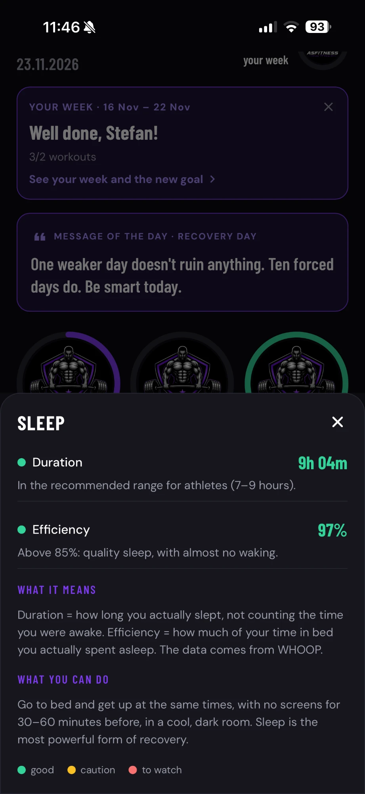
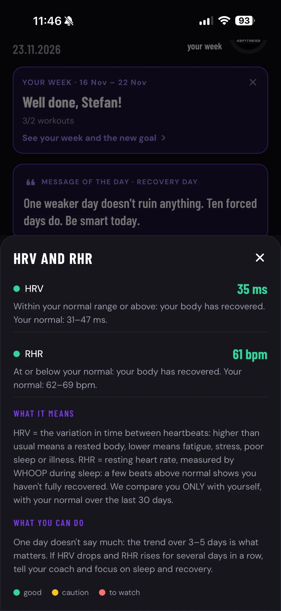

Screenshots of the WHOOP integration in the ASFitness Performance app (iOS · Android · web), taken from a real connected account on 23 November 2026. WHOOP is always shown as the data source; our own section is called “INSIDE DATA” because Apple Health and Garmin will be added later.
TodayReadiness (50% morning questionnaire + 50% WHOOP recovery), sleep, HRV and resting heart rate tiles, training load, manual “Sync WHOOP”.

Sleep detailDuration and efficiency, what they mean and what to do. Source: WHOOP.

HRV & RHRColoured against the member’s own 30-day normal, never against other people.Profile · connectionConnect / reconnect / disconnect. Disconnecting revokes access and deletes the synced WHOOP data.